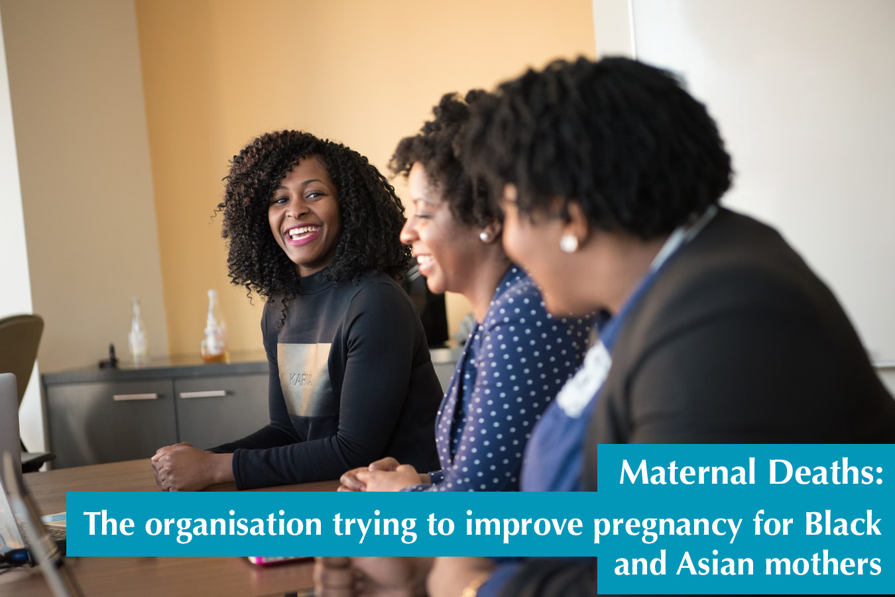

Why are Black women five times more likely to die during childbirth?
By Ezreen Benissan
From the coronavirus to childbirth, Black and minority ethnic groups are persistently vulnerable in healthcare. Women from a BAME background are disproportionately affected during childbirth, with a higher maternal mortality rate than white women. Although healthcare professionals are still attempting to understand the disparities, underlying health conditions is a notable factor.
For many women, giving birth is a precious and intimate moment, one that will never be erased from memory. However, for many Black, Asian and minority ethnic (BAME) mothers, this experience is tainted by fear. Within the community, the struggles Black women have endured during childbirth is no secret. From Beyoncé suffering from preeclampsia, a condition that causes a violent increase in blood pressure, to Serena Williams, who had an emergency C-section after her heart rate fell dangerously low during childbirth. Black celebrities have spoken up about the horrifying experiences they have faced. Now, mothers in the UK are speaking up about their experience of childbirth.
Rachael Buabeng is one of those using her voice to highlight disparities in healthcare. The 34-year-old ‘mumtrepreneur’ and ‘mummy blogger’ from London, experienced extreme sickness and nausea during her first pregnancy. “The sickness was extreme. I was being sick 30 to 50 times a day.” Rachael’s excessive sickness became unmanageable and alarming. After visiting her doctor, she was told that sickness is a normal side-effect of pregnancy; Rachael was given anti-sickness tablets and sent home with no further investigation.
Weeks went by and Rachael’s horrifying situation remained the same. Reflecting on her experience, Rachael describes how she was rushed to the nearest NHS hospital by her sister, but fainted on arrival due to a lack of hydration. After three days in hospital she was diagnosed with the condition Hyperemesis Gravidarum, a pregnancy complication that causes extreme sickness and nausea. Rachael was discharged from the hospital, but less than 24 hours later she suffered a misscarriage.
Dr Danya Chandrakuma, a doctor at the NHS Whittington Hospital in north London, recognised that Hyperemesis Gravidarum is an unpleasant condition that affects many women during their pregnancy: “there are very very rare cases when it is severe, but when it is severe it can be really bad. Unfortunately, if you do suffer with Hyperemesis Gravidarum once before you are likely to get it again in subsequent pregnancies.”
Typically most women suffer mildly from this condition during the early stages of pregnancy, but for those, like Rachael, who experience it throughout their pregnancy are usually admitted to hospital for medication, Chandrakuma tells me. In Rachael’s case her doctors believed she was suffering from morning sickness and “failed to investigate” further. But Rachael knew this was more than just morning sickness. Although she is not sure what could have been done to prevent her traumatic experience, the miscarriage had a heavy impact on Rachael’s mental health.
After suffering horrendously from extreme morning sickness once before, suffering it for a second and third time was a terrifying reality for Rachael. For nine months Rachael was constantly filled with anxiety, “I was always scared for my baby … for my entire pregnancy I was (pretty much) vomiting 30 to 50 times every day until I gave birth,” Rachael says. During both pregnancies, Rachael also battled with various other pregnancy complications including Symphysis pubis dysfunction (SPD), a condition that stiffens the pelvic joints and causes excruciating pain when walking.
Black women are five times more likely to die during childbirth compared to white women
In 2019, MBRRACE released a harrowing report that provided insight into pregnancy and childbirth in the UK. The report, spearheaded by Dr Marian Knight, found Black women are five times more likely to die during childbirth compared to white women, while Asian women are twice as likely. The statistic is unsettling for many, but some mothers who have experienced life-threatening complications are not surprised.
Source: MBRRACE UK. Read full report here
The Office for National Statistics (ONS) does not keep a breakdown of ethnicity when a mother dies during childbirth. Therefore according to the most recent data available, 209 women died during or up-to six weeks after childbirth. Yet over two million women gave birth in the U.K in 2015-17.
A Freedom of Information (FoI) request sent to over 50 hospitals and hospital trusts in England and Wales, paints a similar picture. Due to the low number of maternal deaths, the data provided could be deemed as identifiable information and was not released. Of the hospitals that did respond, Guy’s and St Thomas’ Hospital in London have not recorded any new maternal deaths since 2019. However from 2015-2018, 60 per cent of the recorded fatalities were Black women.
Understanding why BAME women are persistently vulnerable during childbirth is a complex investigation that does not provide immediate answers. Like Rachael, a number of Black and Asian women are known to suffer complications during pregnancy. During Rachael’s second pregnancy she developed a type of diabetes that is commonly incurred during pregnancy, known as Gestational diabetes. Researchers and doctors have recognised that underlying health conditions such as diabetes, high blood pressure and cardiovascular diseases, are some of the health complications that have a significant impact on BAME women during childbirth. The Royal College of Obstetricians and Gynecologist (RCOG) recognise that social and economic factors may also contribute to the health disparities.
I was always scared for my baby. For my entire pregnancy I was (pretty much) vomiting 30 to 50 times every day until I gave birth
NHS nursing assistant and mother of two young children Jessica Lucas*, 36, reflected on her harrowing pregnancy experience which necessitated an emergency C-section. She felt more could have been done to ensure the pregnancy was less traumatic. “It is not just one thing that I feel was not done correctly during my daughters birth. I was in excruciating pain and I just wasn’t listened to. Constantly, I’d mention the pain and this was continuously brushed aside … I guess it wasn’t a priority.”
A spokesperson at the Royal College of Obstetricians and Gynecologists (RCOG) admitted more needs to be done to protect the BAME community in healthcare. “More research is urgently needed to determine why BAME women are more vulnerable, as well as effective solutions to address racial inequalities,” RCOG says. “We are extremely concerned by the clear disparities in outcomes that can be seen for Black, Asian and minority ethnic pregnant women in the UK and we have called on the Government to address these as a matter of urgency.”
As doctors and midwives acknowledge, speaking to Black and Asian women about their experiences can help them understand the disparity. Last month, Rachael published her book Hyperemesis Gravidarum: A BAME Mother’s Story, a short book which documents the mental, physical and cultural struggles the condition imposed on her life. A book she encourages others who are going through, or who have suffered from the condition to read. “[My book] is also for professionals,” Rachael says, “so they can get an insight into how it feels for a patient. A trainee midwife read it recently, she had never heard of the condition and never heard of how people would feel. She said, reading my book has meant that she can go back and look after a patient with HG and not just look after their health but be aware of all the other things that come with it.”
BAME pregnant women and Covid-19
The recent death of Mary Agyapong, a pregnant nurse who died shortly after contracting the coronavirus, raised questions about the condition pregnant women are subjected to work in. “It’s sad … Why was she working? You have to ask yourself that. She was a heavily pregnant black woman,” Lucas says.
Understanding that Black women are five times more likely to die during childbirth, and knowing the coronavirus disproportionately affects BAME communities, Lucas believes more should have been done to protect Ms Agyapong and other women in a similar situation. In an attempt to understand the racial disparities in Covid-19 deaths, Public Health England released a report looking into the coronavirus’ impact on the BAME community.
Following the death of Ms Agyapong, another study was released. The study led by Prof Marian Knight, looked at 427 pregnant women admitted to hospital with coronavirus between 1 March and 14 April 2020. The findings indicate that 56 per cent of pregnant women were from a BAME background – 22 per cent Black, 25 per cent Asian. “Many of us are tired,” Lucas says,“racism is everywhere. Just because you can’t see it, can’t immediately identify it, doesn’t mean it’s not there”. The findings highlighted that age, underlying health conditions and obesity were contributing factors.
Sarah Ronan, who works at the charity Pregnant Then Screwed has seen a sharp increase in the number of pregnant women calling their helpline. She says: “We know of five maternal deaths as a result of Covid-19 but only know the identities of three of those women - Mary Agyapong, a nurse, Salina Shaw, a childcare worker and Fozia Hanif, a probation services officer, - all BAME women and all key workers. Calls to our helpline have increased fivefold since this pandemic began, and many are from pregnant workers terrified that they have to go into unsafe workplaces - this is especially the case for pregnant healthcare workers.”
Frustrated by the statistics, a UK based campaigning group is raising awareness about the maternal mortality rates amongst BAME women. FiveXmore have launched a petition calling for more to be done to protect Black and Asian mothers in healthcare. The petition has received over 150,000 signatures which means it will be debated in parliament, something campaigners have wanted for a long time.

The racial disparity within healthcare is a conversation that is happening frequently in the community and amongst ministers. “The RCOG will continue to work closely with our Members, the Government and other policy makers and professional bodies to ensure that outcomes for BAME women in the UK are improved,” RCOG says.
*Name has been changed to protect the identity of mother

The organisation working to ensure Black and Asian women have a better pregnancy
By Ezreen Benissan
Mums from Black, Asian and ethnic minority backgrounds are finding that they are not getting the support they need so mother of two, Clotilde Abe, decided to start her own community for Black and Asian mothers.
Finding a community that can provide support and advice to women from a Black, Asian and minority ethnic background (BAME) should not be a difficult challenge. A group of Black women have joined together to start charitable organisations that provide assistance to recent or expecting mothers. Clotilde Abe was one of those women who took the initiative to start her own organisation: Prosperitys
Exhausted by the lack of Black and Asian people in her previous mum groups, Clotilde made the decision to create her own organisation that provides a “safe space” for pregnant BAME women living in London. Her organisation, Prosperity, achieved exactly that. As a young first-time mother, finding a mum group was important to her. “I believe that if I see a problem, be the solution,” Clotilde says.
Clotilde was pregnant with her first child when she realised that a community for pregnant black women to confide was missing in London. Alone and isolated, “I wanted to join a mum group with mums that looked like me,” Clotilde says. Feeling alone during pregnancy affects a number of parents. Action for Children, a charity that supports vulnerable children and their families, conducted a survey into loneliness and found that 24 per cent of parents are always or often lonely. During Clotilde’s second pregnancy, she joined a Children’s centre, which was a familiar experience. “The children centre really helped me. I realised just how helpful the children’s centre was, but most people that look like me don’t go because we don’t fit in,” she says.
As a mother of two young children, Clotilde believes there are several reasons Black women are persistently vulnerable during childbirth. The trope of the strong Black woman plays a vital part as to why Black women are five times more likely to die during childbirth, Clotilde says. “[Black women] are not being listened to”, she adds. Unconscious bias and the current curriculum are elements that Clotilde believes affects BAME women during childbirth, “The curriculum needs to be changed; [majority of] studies are done on white women. As women of colour things like bruises show up differently on our body”. Prosperitys’s aim is to support mothers during their pregnancy, but believe it’s down to governing bodies to implement concrete change.
This month, the Nursing & Midwifery Council (NMC) launched a new campaign, Race Matters, which will tackle racial issues within maternity services. “[...] our new NMC Future Midwife Standards have set out such a strong foundation in addressing the key themes of racism, human rights and equity.” Chief Executive, Andrea Sutcliffe, said in a statement. This is a systemic change that many Black and Asian women have been campaigning for for a long time.